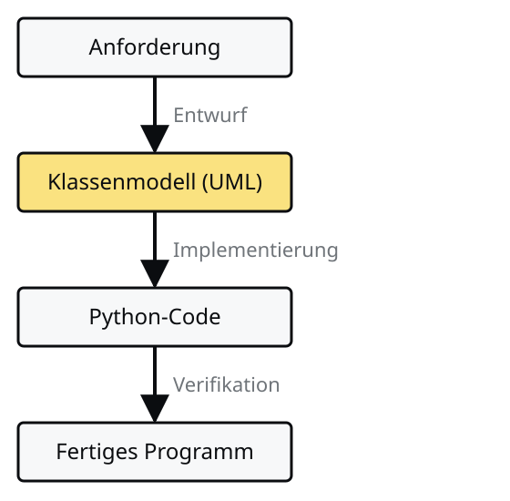
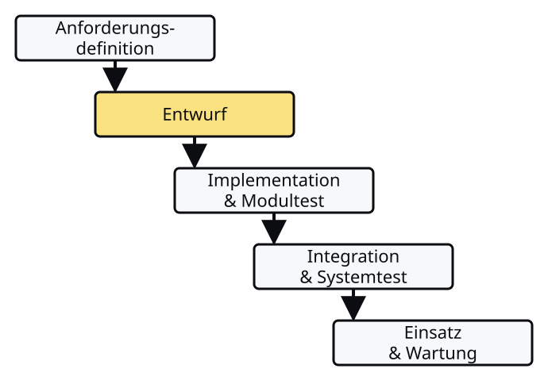
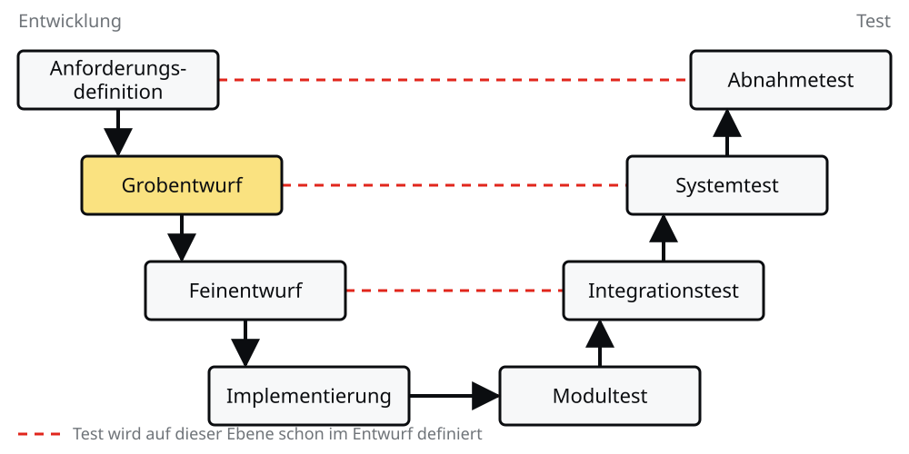
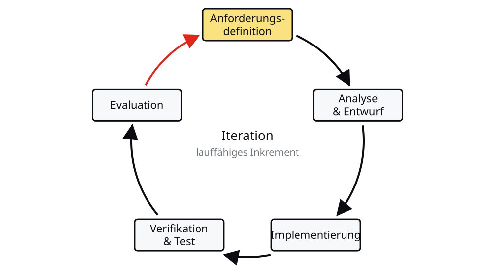
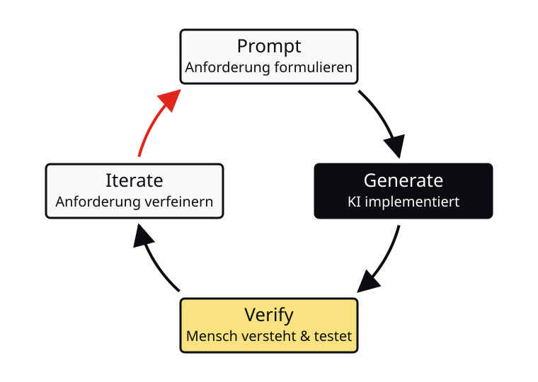

Softwareentwurf
Joern Ploennigs · AI4SC
cf. ‘Waterfall’ by Lu Hui
Hörsaalfrage
Was entsteht zuerst — Code oder Plan?
Die Lücke: Anforderung → Code
Auftraggeber sagt:
„Ich brauche ein Programm, das den Wasserverbrauch eines Gebäudes pro Raum berechnet.”
Entwickler braucht:
- Welche Klassen gibt es?
- Welche Attribute (mit Typen)?
- Welche Methoden (Signaturen)?
- Wie hängen die Teile zusammen?
Entwurf schließt die Lücke
Der Entwurf übersetzt eine Anforderung in eine strukturierte Programmbeschreibung bevor Code geschrieben wird.

Softwareentwurf als Projektplan
- Software wird selten allein entwickelt, sondern oft im Team über einen längeren Zeitraum.
- Dafür wird ein Projektplan benötigt, der beschreibt, wie die Software arbeitsteilig entwickelt werden soll.
- Das Erstellen dieses Projektplans nennt man Softwareentwurf.
- Der Ablauf ähnelt stark dem Entwurfsvorgehen im Umwelt- und Bauingenieurwesen.
- Der Projektplan umfasst:
- den Klassenentwurf (Bauplan)
- die Programmiervorgehen (Bauablaufplanung)
Softwareentwurf — Phasen
Anforderungsdefinition – Definition welche Funktionen und Randbedingungen realisiert werden
Entwurf
- Klassenentwurf der Software
- Ausführungsplanung – Was wird wann, durch wen, und wie implementiert
- Ausführung
- Implementation – Programmieren der einzelnen Klassen & Module
- Integration – Zusammenführen der Module zur fertigen Lösung
- Abnahme – Test des fertigen Softwareprogramms
- Modultest – Unit-Test von Modulen
- Integrationstest – Kombination von Modulen testen
- Systemtest – Gesamtheit der Module testen
Vergleich: Software- vs. Bauingenieurwesen
Softwareentwurf
- Anforderungsdefinition: Definition welche Funktionen und Randbedingungen realisiert werden
Bauingenieurwesen
- Ausschreibung: Dokumentieren welche Funktionen und Randbedingungen das Bauwerk erfüllen
- Entwurf
- Modulentwurf – Definition welche Teile die Software hat
- Klassenentwurf – Definition in welche Klassen die Software strukturiert ist
- Ausführungsplanung – Was wird wann, durch wen, und wie implementiert
- Entwurf
- Architektur und Grobentwurf – Definition wie das Bauwerk grob strukturiert ist
- Fein- und Gewerkplanung – Definition wie Teile und die Gewerke umgesetzt werden
- Ausführungsplanung – Was wird wann, durch wen, und wie gebaut
Vergleich: Software- vs. Bauingenieurwesen (Fortsetzung)
Softwareentwurf
- Ausführung
- Implementation – Programmieren der einzelnen Klassen & Module
- Integration – Zusammenführen der Module zur fertigen Lösung
Bauingenieurwesen
- Ausführung
- Einzelne Gewerke werden umgesetzt
- Gewerke im Bau integrieren, wie Energie und Wasser mit Klima integrieren
- Abnahme
- Modultest – Unit-Test von Modulen
- Integrationstest – Kombination von Modulen testen
- Systemtest – Gesamtheit der Module testen
- Abnahme
- Abnahme einzelner Gewerke
- Test mehrerer Gewerke gemeinsam
- Gesamtbauwerk abnehmen
Welches Vorgehensmodell passt?
Vier Modelle, verglichen nach drei Kriterien: Wann passt es, wann wird geprüft, welches Risiko bleibt?
| Modell | Passt bei | Geprüft | Risiko |
|---|---|---|---|
| Wasserfall | stabilen Anforderungen, Ausschreibung großer Systeme | nach jeder Phase, Abnahme am Ende | Fehler früher Phasen fallen spät auf |
| V-Modell | sicherheitskritischer Software (Auto, Flugzeug) | Tests schon im Entwicklungsarm definiert | aufwendiger als andere Modelle |
| Agil | sich ständig ändernden Anforderungen | pro Iteration, mit Feedback zur lauffähigen Version | Entwurfsfehler können Neuentwurf erzwingen |
| Agentisch | KI-Coding-Assistent verfügbar | Mensch verifiziert nach jeder Generierung | Verstehen und Prüfen liegen beim Ingenieur |
Wasserfallmethode
Traditionelles Modell das häufig noch in der Ausschreibung großer Systeme gefordert wird
Entwicklung ist in mehrere sequenzielle Schritte aufgeteilt und jeder Schritt muss vor dem nächsten beendet werden
Benutzerbeteiligung nur in der Anforderungsdefinition
Jeder Aktivität wird dokumentiert → Gut geeignet für Ausschreibungen (nach der Anforderungsdefinition oder dem Entwurf, ISO 9000)

V-Methode
Primär verwendet bei der Entwicklung sicherheitskritischer Software (Auto, Flugzeug, etc.)
Separiert Entwicklungs- (linke Seite) und Testaktivitäten (rechte Seite)
Tests werden schon im Entwicklungsarm definiert
Ziel einer hohen Testabdeckung
Benutzerbeteiligung in der Anforderungsdefinition und im Abnahmetest

Agile Methode
Moderne Methode um mit sich an ständig ändernden Anforderungen anpassen
Ziel der schrittweisen Entwicklung der Lösung, um Aufwand und Komplexität einzelner Schritte in Grenzen zu halten
Startet mit einer einfachen und ausbaufähigen Implementierung (MVP – Minimal Viable Produkt)
Schrittweise Erweiterung und Verbesserung des Produktes mit regelmäßigen Releases (meist alle 3 Monate)
Entwurfsfehler der ersten Iterationen können zu kompletten Neuentwurf führen

Agentischer Entwicklungs-Loop
KI übernimmt die Implementierungsphase — der Ingenieur steuert und verifiziert:
- Prompt = Anforderungsspezifikation
- Generate = Implementierungssprint (KI)
- Verify = Verstehen & Testen (Mensch)
- Iterate = Prompt verfeinern
Kernkompetenz: Verstehen und Verifizieren

Vier Vorgehensmodelle im Vergleich
| Wasserfall | V-Modell | Agil | Agentisch | |
|---|---|---|---|---|
| Ablauf | sequenziell, Phase für Phase | sequenziell, Tests je Phase vorab definiert | iterativ, regelmäßige Releases | iterativ, KI generiert den Code |
| Stärke | planbar, vollständig dokumentiert | hohe Testabdeckung | flexibel, frühes Feedback | Prompt ist die Spezifikation, Mensch verifiziert |
| Passt bei | stabilen Anforderungen | sicherheitskritischer Software | sich ändernden Anforderungen | verfügbarem KI-Coding-Assistenten |
Questions

Ingenieurs-
Informatik